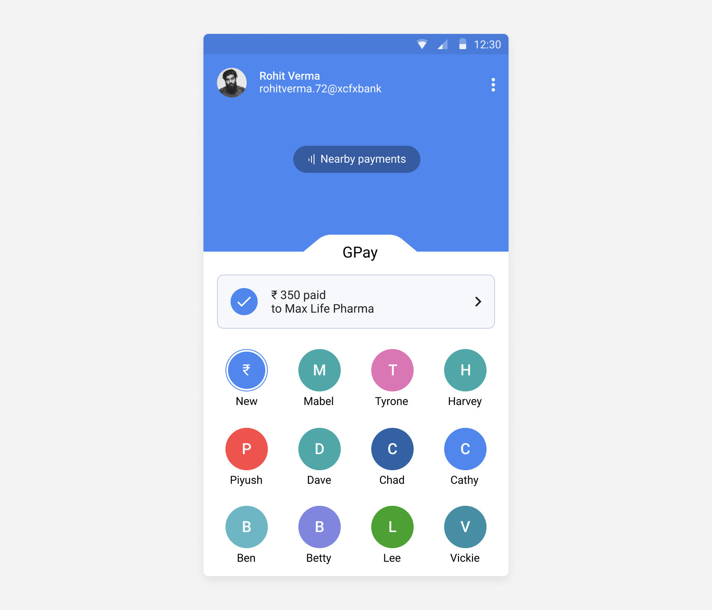
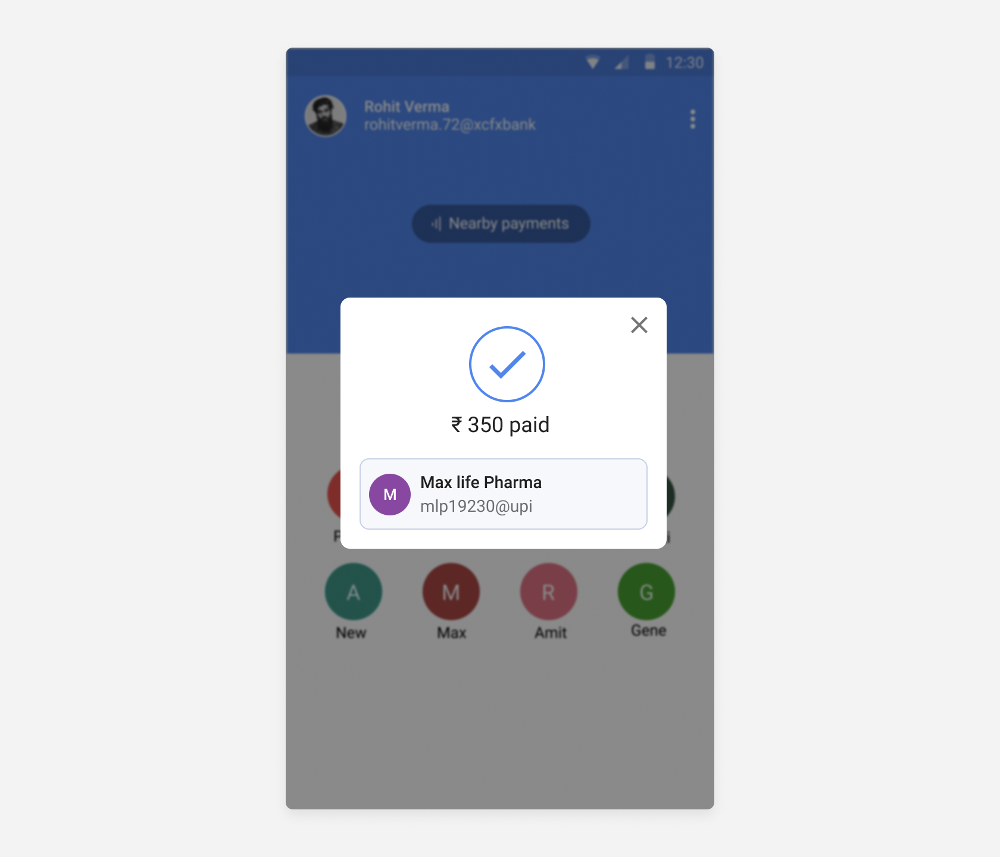

Rajni Reddy
Splitting payments inside WhatsApp Pay
Background
WhatsApp Pay is a beta feature of WhatsApp which utilizes UPI for accepting and requesting payments. In this project, I will explore a step further, splitting a payments amongst a group.
Problem and hypothesis
We have all experienced problems while splitting a bill after a night out with friends or colleagues. The hassle of manually splitting bills is clumsy and complicated. Although the payment option in WhatsApp already exists, it's much easier to split bills in a more organized and efficient way.
This can be done by allowing the spender to create a split bill and send a request over a group chat. Though you can send the request to an individual chat contact, it is much more systematic to send the request once to everyone at one place. Increasing the adoption of WhatsApp pay. want more users to use it frequently for a wide range of purposes. no awareness or engagement?
>> Add video of the current flow <<
Research
The research plan around this was to define personas, finding contacts matching these personas, and then interviewing them. The interviews were structured around three major questions:
- The existing process of splitting the bill
- Awareness of WhatsApp Pay
- Experience of splitting bills app
UI design
First approach: Introducing a card with the payment details
My thoughts:
- It can be missed by the user as it doesn't grab much attention.
- Not clear and intuitive enough.
- Involves another step of clicking on the arrow icon if more details of the payment are required.
Second approach: Showing a popup
My thoughts:
- It’s not intuitive enough.
- It doesn't have any kind of delight hence, it looks bland.
- The X (close icon) doesn't grab much attention. This makes the user experience less efficient.
The pros of both the card and popup design involve mentioning the payment details right after a payment is done. Both the designs, to an extent, add an additional step of going into “All transactions” to check the payment information in detail.
Third approach: Turning the entire screen into a success status

My thoughts:
- It doesn't go away unless clicked on “Done” thereby solving the user problem.
- Continues the usage of existing delightful interaction
- The “Done” button is very intuitive making the user experience easier compared to the other two options.
Fourth approach: Adding animation and detailed payment information

My thoughts:
- It provides a strong delightful experience by adding a “Payment Successful” animation.
- Automatically takes to another screen with much more detailed payment information.
Conclusion
Showing the payment details upfront and across the entire screen makes the payment experience a lot easier for the user. Hence, both the third and fourth design is a good solution to the problem. One of the ways of measuring success would be observing changes in user journey in sessions where users pay and go into transaction history. There should be a drop in this user journey.